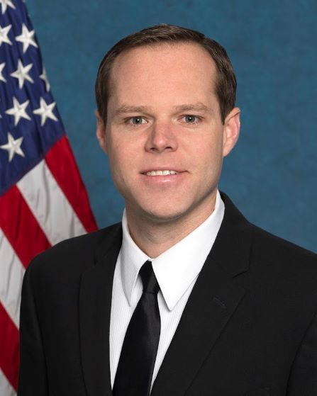

About Me
Hello everyone! My name is Bradley Jensen and I’m an engineer and aspiring web developer. I’m currently living in Washington DC, which is a great place to live and work. I enjoy building things. Everything from a meal I’ve never tried cooking to Internet-of-Things projects. The learning process and solving problems are my passion.
I’m building a portfolio of web development projects. Focusing on a fluid user experience with quick and responsive backend systems. Experienced with HTML, CSS, and JavaScript; including the Bootstrap libraries.
My educational background is a B.S. in Aerospace Engineering from Cal Poly, San Luis Obispo and a Masters in Engineering Management from Ohio University. This education served me well during my tenure as an Electronics Warfare Test Engineer at Edwards, AFB. And I am currently a Senior Engineer at Modern Technology Solutions, Inc. providing contract support to the Developmental and Operational Test Teams at the F-35 Joint Program Office.